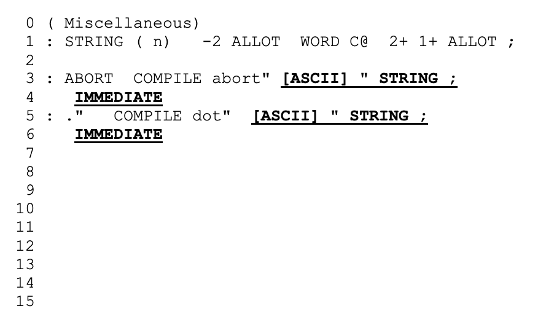
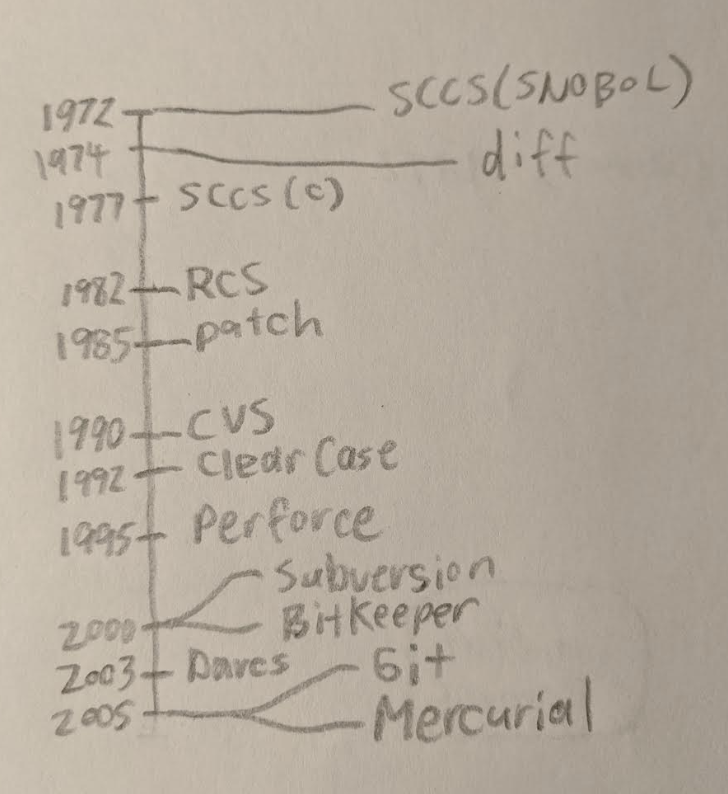
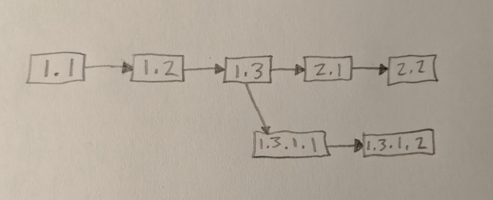
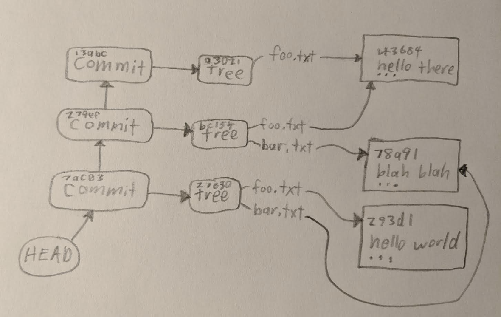
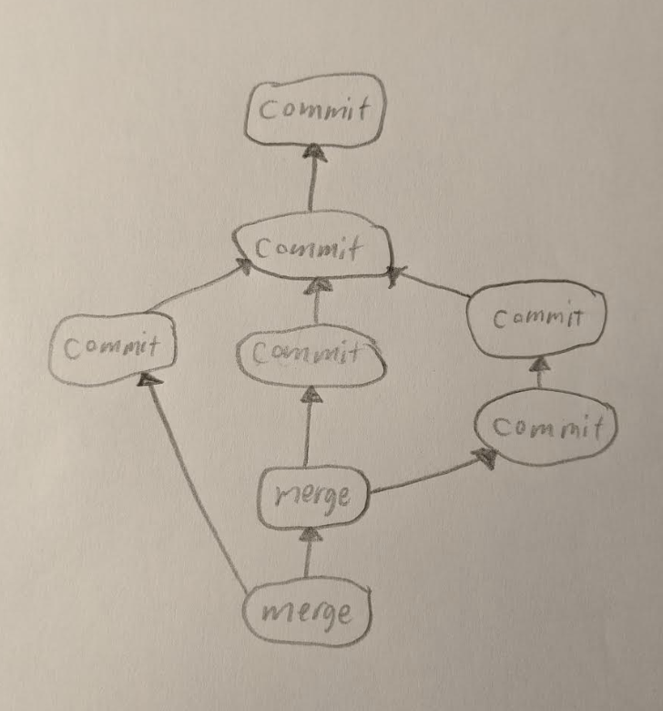

<!doctype html>
<html lang="en">
  <head>
    <meta charset="utf-8">
    <title>Group Development with Git, Github & Forth</title>
    <meta name="description"
          content="Group Development with Git, Github & Forth - October 26, 2019">
    <meta name="author" content="Brad Nelson">
    <meta name="apple-mobile-web-app-capable" content="yes" />
    <meta name="apple-mobile-web-app-status-bar-style"
    content="black-translucent" />

    <meta name="viewport" content="width=device-width, initial-scale=1.0, maximum-scale=1.0, user-scalable=no, minimal-ui">
    <link rel="stylesheet" href="../reveal.js/dist/reveal.css">
    <link rel="stylesheet" href="../reveal.js/dist/theme/simple.css" id="theme">
    <!-- Code syntax highlighting -->
    <!--
      <link rel="stylesheet" href="../reveal.js/plugin/highlight/zenburn.css">
    -->
    <script src="../common/printing.js"></script>
    <!--[if lt IE 9]>
    <script src="../reveal.js/lib/js/html5shiv.js"></script>
    <![endif]-->
    <style>
pre {
  background-color: #ddd;
}
pre.gold {
  background-color: #fed;
}
pre.blue {
  background-color: #def;
}
span.gold {
  color: #c80;
}
span.blue {
  color: #08c;
}
    </style>
  </head>

<!--

Group Development with Git, Github & Forth
------------------------------------------
    As we collaborate on ESP32 EForth, Robots, and our monthly agenda, the SVFIG
community needs a way to work together. Fortunately, Git and Github handle this
job well and are now widely used by a majority of open source projects.
    I'll introduce the basics of Git on Linux and Windows, setting up a Github
account, working together with pull-requests, using Travis-CI to keep builds
green, and special considerations when working with Forth software.
    For a bonus round, we'll cover the process of setting up the ESP-IDF SDK
on Windows or Linux, checking  out espforth with Git, and building it to run
on our robot boards.

-->

  <body>
    <div style="position: fixed; bottom: 0; width: 100%">
      <center>
        <h2 style="font-family=monospace; color: blue" id="cc1"></h2>
        <h2 style="font-family=monospace" id="cc2"></h2>
      </center>
    </div>
    <div class="reveal">

      <div class="slides">
        <section data-transition="fade-out">
          <h2><span class="blue">
          Group Development with<br/>Git, Github & Forth</span></h2>
          <h2>October 26, 2019</h2>
          <p>
          <small><a href="http://flagxor.com">Brad Nelson</a> /
            <a href="http://twitter.com/flagxor">@flagxor</a></small>
          </p>
        </section>

        <section data-transition="fade-out">
          <h2>Motivation</h2>
          <ul>
            <li>Keep a record of software as it changes</li>
            <li>Go back to different versions</li>
            <li>Compare versions</li>
            <li>Work on software in groups</li>
            <li class="fragment">Hell is other people</li>
          </ul>
        </section>

        <section data-transition="fade-out">
          <h2>polyFORTH AUDIT</h2>
          <ul>
            <li>Compare and merge two versions of a set of source blocks</li>
            <li>2 PART 100 150 MATCHING<br/>2 PART 100 200 4 AGAINST</li>
            <li>Integrated with block editor</li>
            <li>L, O (without diff) V, W (with diff highlighted)</li>
            <li>KEEP, TOSS to finish a block</li>
          </ul>
        </section>

        <section data-transition="fade-out">
          <h2>polyFORTH AUDIT</h2>
          
        </section>

        <section data-transition="fade-out">
          <h2>History</h2>
          
        </section>

        <section data-transition="fade-out">
          <h2>SCCS</h2>
          <ul>
            <li>SCCS = Source Code Control System</li>
            <li>SCCS (SNOBOL) - 1972</li>
            <li>SCCS (C) - 1977</li>
            <li>Store version history per file</li>
            <li>Record changes a series of edits</li>
            <li>Used as internal format of BitKeeper, Teamware</li>
          </ul>
        </section>

        <section data-transition="fade-out">
          <h2>RCS - 1982</h2>
          <ul>
            <li>RCS = Revision Control System</li>
            <li>Store version history per file</li>
            <li>Files are checked in and out with locking</li>
            <li>Support for branches and merging</li>
            <li>Used internally by CVS</li>
            <li>Sharing often via NFS or other file shares</li>
          </ul>
        </section>

        <section data-transition="fade-out">
          <h2>RCS Usage</h2>
<pre>
( create a new file called foo.txt)
ci foo.txt
co foo.txt
( compile or otherwise use it )
co -l foo.txt
( edit foo.txt )
ci foo.txt
</pre>
        </section>

        <section data-transition="fade-out">
          <h2>RCS Branches</h2>
          
        </section>

        <section data-transition="fade-out">
          <h2>diff - 1974</h2>
<pre>
diff a.txt b.txt 
<span class="gold">2,3</span>c<span class="blue">2,3</span>
<span class="gold">&lt; In this example, some
&lt; things will be changed.</span>
---
<span class="blue">&gt; In this example, one
&gt; thing will be changed.</span>
</pre>
<pre style="float: left; width: 40%;" class="gold">
This is an example.
In this example, some
things will be changed.
The quick brown fox jumped
over the lazy dog.
</pre>
<pre style="float: right; width: 40%;" class="blue">
This is an example.
In this example, one
thing will be changed.
The quick brown fox jumped
over the lazy dog.
</pre>
        </section>

        <section data-transition="fade-out">
          <h2>diff (unified) - 1990</h2>
<pre>
diff -u a.txt b.txt 
<span class="gold">--- a.txt	2019-10-25 22:56:26.000000000 -0700</span>
<span class="blue">+++ b.txt	2019-10-25 22:56:52.000000000 -0700</span>
@@ <span class="gold">-1,6</span> <span class="blue">+1,6</span> @@
 This is an example.
<span class="gold">-In this example, some</span>
<span class="gold">-things will be changed.</span>
<span class="blue">+In this example, one</span>
<span class="blue">+thing will be changed.</span>
 The quick brown fox jumped
 over the lazy dog.
</pre>
<pre style="float: left; width: 40%;" class="gold">
This is an example.
In this example, some
things will be changed.
The quick brown fox jumped
over the lazy dog.
</pre>
<pre style="float: right; width: 40%;" class="blue">
This is an example.
In this example, one
thing will be changed.
The quick brown fox jumped
over the lazy dog.
</pre>
        </section>

        <section data-transition="fade-out">
          <h2>patch - 1985</h2>
          <ul>
            <li>Reverse what diff does!</li>
            <li>Created by Larry Wall (inventor of Perl)</li>
            <li>Developers can now send "patches"</li>
            <li>Diffs can sometimes apply even if things change</li>
            <li>Diffs can partially apply</li>
          </ul>
        </section>

        <section data-transition="fade-out">
          <h2>CVS - 1990</h2>
          <ul>
            <li>CVS = Concurrent Version System</li>
            <li>Created by Dick Grune to work with his grad students</li>
            <li>Checkouts can be edited conncurrently</li>
            <li>Before a develop can commit they have update and resolve conflicts</li>
            <li>Uses RCS underneath</li>
            <li>Commits are not atomic</li>
          </ul>
        </section>

        <section data-transition="fade-out">
          <h2>CVS Usage</h2>
<pre>
cvs checkout prog1
cd prog1
( create foo.txt )
cvs add foo.txt
cvs commit
( edit foo.txt 0
cvs commit
</pre>
        </section>

        <section data-transition="fade-out">
          <h2>ClearCase - 1992</h2>
          <ul>
            <li>Proprietary</li>
            <li>Source control integrated with file system</li>
            <li>Non-atomic commits</li>
            <li>Track a "bill of materials"</li>
            <li>Integration with build system</li>
            <li>Centralized repository and administration</li>
          </ul>
        </section>

        <section data-transition="fade-out">
          <h2>Perforce - 1995</h2>
          <ul>
            <li>Proprietary</li>
            <li>Scales to large repositories</li>
            <li>External APIs</li>
            <li>Atomic commits, monotonically increasing CL# (Change List)</li>
            <li>Branches supported, but merging is so-so</li>
            <li>Centralized repository and administration</li>
            <li>Influenced internal tools at Google and Microsoft</li>
          </ul>
        </section>

        <section data-transition="fade-out">
          <h2>Subversion - 2000</h2>
          <ul>
            <li>Atomic commits, monotonically increasing revision numbers</li>
            <li>Network protocol</li>
            <li>A better CVS</li>
          </ul>
        </section>

        <section data-transition="fade-out">
          <h2>Subversion Usage</h2>
<pre>
svn checkout http://src.chromium.org/chrome/
svn update
( add foo.c )
svn add foo.c
svn commit
</pre>
        </section>

        <section data-transition="fade-out">
          <h2>BitKeeper - 2000</h2>
          <ul>
            <li>Proprietary</li>
            <li>First major distributed version control system</li>
            <li>Local copy of reposity history</li>
            <li>Fast atomic <b>local</b> operation, low effort merges</li>
            <li>Used to much controversy for Linux Kernel</li>
          </ul>
        </section>

        <section data-transition="fade-out">
          <h2>Darcs - 2003</h2>
          <ul>
            <li>Darcs Advanced Revision Control System</li>
            <li>Implemented in Haskell</li>
            <li>History is viewed as series of patches</li>
            <li>Patch algebra involving commuting and inverting patches</li>
            <li>Potentially exponential time merges</li>
          </ul>
        </section>

        <section data-transition="fade-out">
          <h2>Git - 2005</h2>
          <ul>
            <li>Distributed Version Control</li>
            <li>Linus Tovalds implements in reaction to BitKeeper fiasco</li>
            <li>Fast atomic <b>local</b> operation, low effort merges</li>
            <li>Implemented in C, with some Perl, Bash, Tcl</li>
          </ul>
        </section>

        <section data-transition="fade-out">
          <h2>Mercurial - 2005</h2>
          <ul>
            <li>Distributed Version Control</li>
            <li>Also kicked off by BitKeeper incident</li>
            <li>Fast atomic <b>local</b> operation, low effort merges</li>
            <li>"Friendly" syntax closer to subversion</li>
            <li>Implemented in Python, with some C</li>
            <li>Used at Facebook and somewhat at Google</li>
          </ul>
        </section>

        <section data-transition="fade-out">
          <h2>Crytographic Hashing</h2>
          <ul>
            <li>Input bits should maximally impact hash bits</li>
            <li>Unbiased in constrast to a CRC</li>
            <li>Likelihood of collisions low enough it can be ignored</li>
            <li>Allows a "global unique id" for data without centralization coordination</li>
            <li>Used as a digest for cryptographic signing</li>
            <li>Used in proof of work algorithms for cryptocurrencies (Bitcoin)</li>
          </ul>
        </section>

        <section data-transition="fade-out">
          <h2>SHA1 for Git</h2>
          <ul>
            <li>160-bit, 20-byte, 40-hex digit digest</li>
            <li>Theoretical attacks since 2005</li>
            <li>Deprecated by NIST in 2011</li>
            <li>PDF collision demonstrated by Google in 2017</li>
            <li>Used for Git!</li>
          </ul>
	  
        </section>

        <section data-transition="fade-out">
          <h2>Git Structure</h2>
          
        </section>

        <section data-transition="fade-out">
          <h2>Git Commit</h2>
<pre>
git cat-file -p 84526055cbc8ef43f5352766066f43598acbf464
----------------------------------------------------------
tree 3d3efe3c0a3cfd859a6c3946e6976f503c763c46
parent f45dde8ffd994689de229b67439021484164a7a3
author Brad Nelson <flagxor@gmail.com> 1571510583 -0700
committer Brad Nelson <flagxor@gmail.com> 1571510583 -0700

Starting next talk.
</pre>
        </section>

        <section data-transition="fade-out">
          <h2>Git Tree</h2>
<pre>
git cat-file -p 3d3efe3c0a3cfd859a6c3946e6976f503c763c46
--------------------------------------------------------
100644 blob d140ea...919970e7f88263	.gitignore
100644 blob 0908dd...2abe8af39aa0c4	.gitmodules
100644 blob b31ff8...f815b589370f27	Makefile
100644 blob 42d896...1dede9bcc9cfb4	README.md
040000 tree e9ce26...d8a43fd617c6fa	common
160000 commit 525e4f...41ac574475819f	impress.js
100644 blob b3560e...9392b53bbc2318	index.html
040000 tree 46efbd...28d5cc4c3b77cc	intro-2018-01-30
160000 commit 43eada...7831aef8e76759	reveal.js
040000 tree a92893...28aa4839243024	svfig-2015-04-25
040000 tree f2d72f...c232d967724c9c	svfig-2015-06-27
040000 tree 1fb97e...300822c331f04d	svfig-2015-07-25
040000 tree 699e54...1d2e885827f13b	svfig-2015-08-22
040000 tree 44991d...800e5d821d263d	svfig-2015-11-21
040000 tree 9ee021...f31bd91df36274	svfig-2016-01-23
</pre>
        </section>

        <section data-transition="fade-out">
          <h2>Git Blob</h2>
<pre>
git cat-file -p 42d896146a714d53b123706dfd1dede9bcc9cfb4
--------------------------------------------------------
Slides for Brad Nelson's SVFIG Talks.

View at: https://flagxor.github.io/svfig-talks
</pre>
        </section>

        <section data-transition="fade-out">
          <h2>Git Branch / Merge</h2>
          
        </section>

        <section data-transition="fade-out">
          <h2>Git Rebasing</h2>
<pre>
pick 4ffe208 Adding more to the talk.
pick c16e35a More improvements.
pick 1993d9d More

# Rebase 933b026..1993d9d onto 933b026 (3 commands)
#
# Commands:
# p, pick <commit> = use commit
# r, reword <commit> = use commit, but edit the commit message
# e, edit <commit> = use commit, but stop for amending
# s, squash <commit> = use commit, but meld into previous commit
# f, fixup <commit> = like "squash", but discard this commit's log message
# x, exec <command> = run command (the rest of the line) using shell
# d, drop <commit> = remove commit
# l, label <label> = label current HEAD with a name
# t, reset <label> = reset HEAD to a label
# m, merge [-C <commit> | -c <commit>] <label> [# <oneline>]
# .       create a merge commit using the original merge commit's
# .       message (or the oneline, if no original merge commit was
# .       specified). Use -c <commit> to reword the commit message.
</pre>
        </section>

        <section data-transition="fade-out">
          <h2>Getting Git</h2>
          <ul>
            <li>Linux: sudo apt-get install git</li>
            <li>Windows: Linux subsystem, cygwin, or native</li>
          </ul>
        </section>

        <section data-transition="fade-out">
          <h2>Git Usage</h2>
<pre>
git init
( create foo.fs )
git add foo.fs
git commit
( edit foo.fs )
git commit -a
</pre>
        </section>

        <section data-transition="fade-out">
          <h2>Git Pushing and Pull</h2>
          <ul>
            <li>git push - push a branch to a remote server</li>
            <li>git pull - fetch and merge changes from a remote server</li>
          </ul>
        </section>

        <section data-transition="fade-out">
          <h2>Github</h2>
          <ul>
            <li>Centralized hosting for git repositories</li>
            <li>Free for open source</li>
            <li>Integrated code review via "pull requests"</li>
            <li>Integrated web hosting of revisioned content</li>
            <li>Integrated web based editor, syntax highlighting</li>
            <li>Integrated markdown documentation</li>
            <li>Wildly popular for hosting open source projects</li>
            <li>Recently acquired by Microsoft</li>
          </ul>
        </section>

        <section data-transition="fade-out">
          <h2>Travis-CI</h2>
          <ul>
            <li>Continuous Integration, integrated with github</li>
            <li>Free (as in beer) for open source projects</li>
            <li>Build instructions with each commit run in the cloud</li>
            <li>Integration with github API to show status, enforce policy</li>
            <li>Possible to provide credential keys to upload artifacts</li>
          </ul>
        </section>

        <section data-transition="fade-out">
          <h2>.travis.yml</h2>
<pre>
language: node_js

node_js:
  - "node"

script:
  - bash ./test/run-tests.sh

os:
  - linux
  - osx
</pre>
        </section>

        <section data-transition="fade-out">
          <h2>Tutorial</h2>
          <p>
          <a href="https://github.com/flagxor/svfig-talks">slides</a>
          at:
          <a href="https://github.com/flagxor">
            github.com/flagxor</a></p>
          <p>
          </p>
          <h1>&#x2698;</h1>
          <h2>Thank you</h2>
        </section>

     </div>
    </div>

    <script src="../reveal.js/dist/reveal.js"></script>
    <script src="../reveal.js/plugin/highlight/highlight.js"></script>
    <script>
      Reveal.initialize({
        plugins: [RevealHighlight],
     });
    </script>

  </body>
</html>
